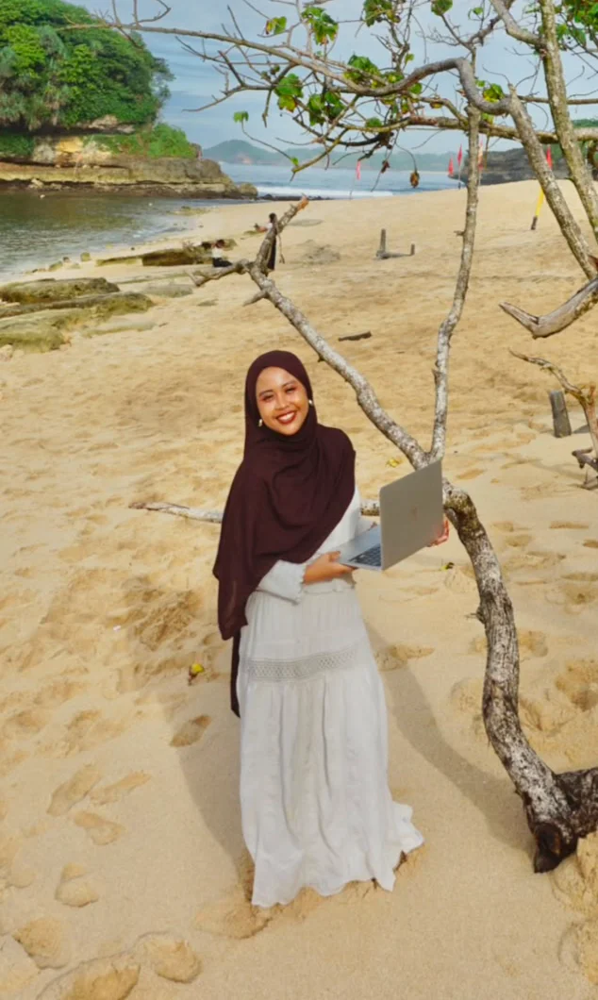

01. WFA Jobs & Peluang Kerja
Kurasi lowongan kerja WFA dari berbagai perusahaan global buat kamu yang pengen mulai kerja fleksibel.

Hai aku Anggun. Digital nomad yang kerjanya sambil keliling dunia. Aku bantu kamu membangun penghasilan dari dunia digital dan menemukan peluang dari luar negeri, supaya kamu bebas traveling & bekerja dari mana saja.
“Dulu bisa terus sekolah aja udah sebuah perjuangan besar. Sekarang, aku bisa kerja dari mana aja, berkarya jadi content creator, dan menjalani hidup yang dulu cuma berani aku impikan.”
Mampir ke IG @anggunfebby.sKurasi lowongan kerja WFA dari berbagai perusahaan global buat kamu yang pengen mulai kerja fleksibel.
Tertarik kolaborasi campaign, review akomodasi/destinasi, konten kreatif, atau sponsorship? Yuk minta rate card-ku.
Buat kamu yang mau bimbingan intensif soal skill, mindset, dan langkah nyata transisi jadi pekerja WFA dari nol.

Paket lengkap panduan kerja remote, template kreator, AI assistant, dan tools WFA siap pakai untuk mulai berkarya dari mana aja.
Pilih kelas online paket terlengkap, mentoring private 1-on-1 via Zoom, atau kelas tatap muka eksklusif bersama tim Sekolah WFA.
Cerita nyata dari 14 teman alumni Sekolah WFA yang sekarang bisa kerja dan berpenghasilan dari mana aja.
Nggak perlu ngerasa sendirian. Di sini kita saling kenal, sharing tips hidup WFA, saling semangatin, sampai janjian coworking bareng.
.webp)
.webp)
.webp)
.webp)
.webp)
.webp)
.webp)
.webp)
.webp)

Kumpulan kota dan negara yang pernah aku singgahi buat kerja remote. Ada info WiFi kafe, kisaran biaya hidup, sampai urusan visa.
📍 Tropical Creator Hub
Surga tropis kreator. Kafe di antara persawahan Ubud hingga beach club Canggu, perpaduan seimbang antara ritme kerja dan alam.
 ⚡ Hyper-Efficiency
⚡ Hyper-Efficiency
Megacity paling efisien di dunia. Internet fiber 150+ Mbps di setiap sudut, kafe ramah laptop hingga larut malam di Shibuya dan Daikanyama.
Ritme cepat dan denyut energi global. Ruang kerja kreatif industrial di Brooklyn dan akses networking brand internasional tanpa batas.
Bekerja dikelilingi pegunungan salju dan danau alpine Queenstown. Destinasi impian untuk deep work dan mindful remote living sejati.
Aku sering sharing spot kerja tersembunyi, update visa nomad, dan suasana kafe baru di grup WhatsApp.
Refleksi jujur seputar finansial nomad, adaptasi lintas budaya, dan cara menjaga ritme kerja saat berpindah negara.
Bukan cuma soal tiket promo. Ini rincian nyata cashflow bulanan, perbandingan biaya sewa akomodasi di Bali vs Tokyo, asuransi kesehatan nomad, dan dana darurat yang wajib disiapkan sebelum pamit dari kantor.
Kisah adaptasi dari ritme santai tropis ke kota paling teratur di dunia. Tips mencari kafe ramah laptop dengan stopkontak, etiket kerja remote di Jepang, dan spot coworking tersembunyi di Daikanyama.
Transisi terbesar menjadi pekerja WFA bukan belajar software baru, tapi merombak cara pandang kita tentang produktivitas. Bagaimana berhenti merasa bersalah saat menutup laptop di jam 2 siang.
Semua hal penting seputar akses produk, bimbingan, dan cara kolaborasi bersama Anggun.
Semua panduan dan WFA tools tersedia dalam format digital (PDF, Notion template, spreadsheet) di Lynk.id. Link akses langsung aktif setelah pembayaran.
Ya! Sekali akses, kamu bisa membuka dan mengunduh ulang kapan pun serta mendapat pembaruan materi gratis.
Kamu bisa chat langsung via WhatsApp atau DM Instagram @anggunfebby.s untuk campaign brand, review destinasi, atau sponsorship.
Kamu bisa gabung komunitas WFA gratis terlebih dulu atau langsung chat tim lewat WhatsApp untuk arahan produk yang paling sesuai.
Gabung komunitas dan dapatkan info lowongan kerja remote serta checklist WFA gratis.
.webp)


Intip Keseharian & Konten Terbaruku
Di media sosial, aku rutin spill tips kerja WFA, review spot ngopi estetik di berbagai negara, behind the scenes, dan daily vlog perjalanan:
Tips WFA, Rekomendasi & Dokumentasi Momen
Daily reels, tips transisi WFA, update destinasi live, dan sesi Q&A di story.
Konten Santai, Behind The Scenes & Reality WFA
Reels santai, realita kerja nomad dari kafe, dan curhatan jujur seputar WFA.
Travel Vlog & Dokumentasi Keliling Dunia
Vlog perjalanan mendalam, cost of living nomad, dan room tour akomodasi remote.